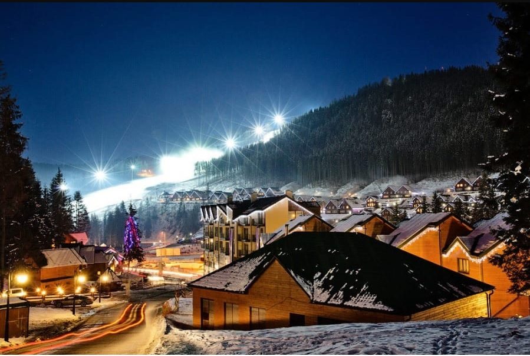

Найбільший гірськолижний курорт України.
Драгобрат – це найвищий гірськолижний курорт України, розташований на висоті 1300-1700 метрів над рівнем моря в самому серці Карпат

«Захар Беркут» – це гірськолижний курорт та відпочинковий комплекс, що знаходиться в серці Карпат, неподалік від смт. Славське, в с. Волосянка.

Відпочинковий комплекс «Плай» - улюблене місце для поціновувачів української природи та карпатських гір. Це своєрідне невелике містечко в селищі Плав’є з дуже добре розвиненою інфраструктурою. Найбільш відомий Плай завдяки гірськолижним трасам та підйомникам. Саме тут можна отримати максимум задоволення від катання на лижах та сноутбордах по гірським спускам.

Гірськолижні схили Красії підійдуть для відпочиваючих з будь-яким рівнем фізичної підготовки. Основна траса гірськолижного курорту довжиною у 3,5 км є найдовшою в Україні. Схили Красії – це перш за все зручність, адже піднятися можна як на крісельних, так і на бугельних підйомниках, а сніговий покрив зробить катання трасами шириною у 250 м незабутнім.

Гірськолижний курорт «Буковиця» – найкращі снігові траси різного рівня складності. Якщо Ви любите зимові види спорту, значить Вам точно варто побувати у нас в гостях.